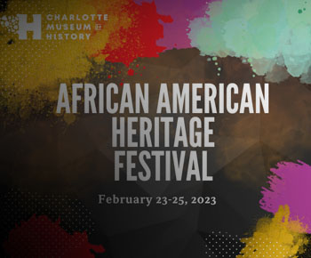
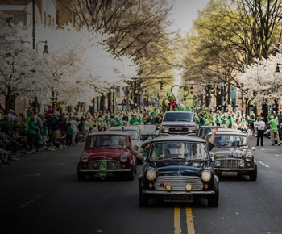
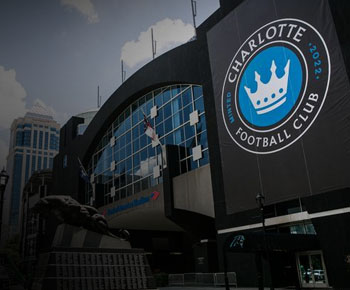
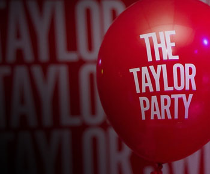
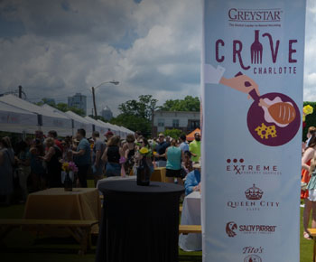
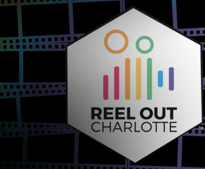

Próximos eventos:
-
Innovative Works
Arte y teatro
Para los amantes del Ballet, cuya danza explora la proximidad, la intimidad y el espacio personal.
Ver másfeb 03 - marzo 25
-
Picasso
Arte y cultura
Explora el profundo compromiso de Pablo Picasso con su arte y su enfoque expansivo de este género tradicional.
Ver másfeb 11 - mayo 21
-
 Herencia afroamericana
Festival
Obtenga entrada gratuita al Museo de Historia de Charlotte para celebrar la historia y cultura afroamericana.
Ver másfeb 23 - feb 25
-
Science on the Rocks
Eveto social
Está invitado a una noche de ciencia en Science on the Rocks, ganador del premio Best of the Best de la revista Charlotte.
Ver másfeb 24
-
 Día de San Patricio
Desfile
Charlotte ha realizado el desfile y festival del Día de San Patricio durante los últimos 24 años.
Ver másmarzo 11
-
 Charlotte FC vs. Atlanta FC
Deportes
Disfruta del partido de fútbol entre la selección de Charlotte y la de Atlanta.
Comprar ticketsmarzo 11
-
Saturno World Tour
Conciertos
Ya que sus fans no pueden viajar a Saturno, Rauw Alejandro trae a la Tierra el mundo extraterrestre.
Comprar ticketsmarzo 18
-
Complicated Tour
Conciertos
Joshua Basset presenta su segunda gira que llegará a lugares de Estados Unidos y Europa este año.
Comprar ticketsmarzo 29
-
Dragones y bestias místicas
Arte y teatro
Entra en un mundo mágico de mitos y leyendas en este nuevo espectáculo fantástico para toda la familia.
Comprar ticketsmarzo 31
-
 abril 8
-
 Charlotte Wine & Food
Eat and drink
25 chefs, vinos de todo el mundo y cerveceros locales participarán en la Gran Celebración Culinaria en Charlotte
Ver másabril 18 - abril 23
-
 Reel Out Film Festival
Cine
El festival anual de cine LGBTQ de The Queen City regresa después de dos años.
Ver másmayo 17 - mayo 21